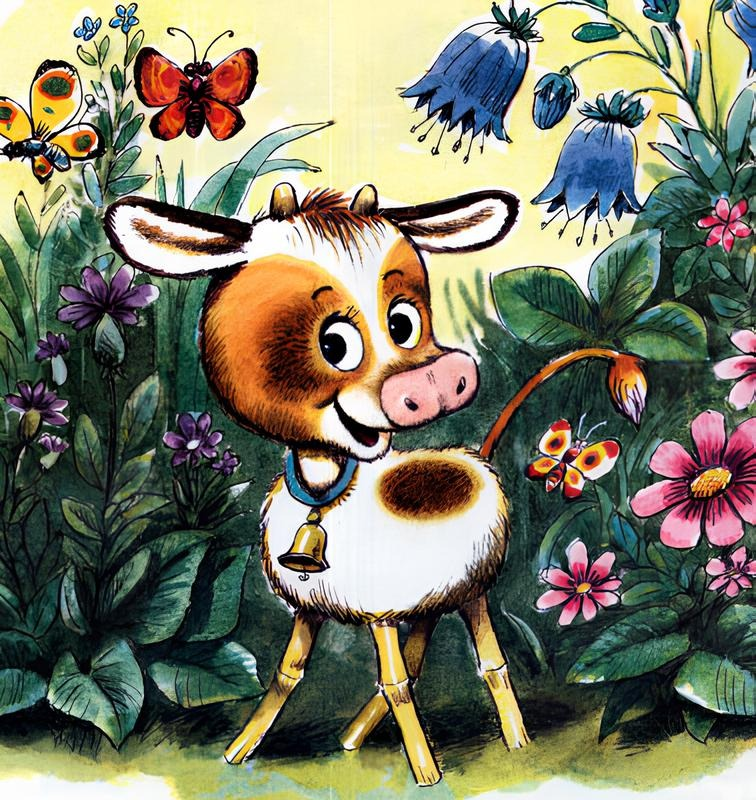
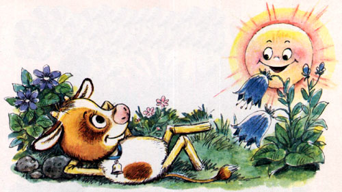
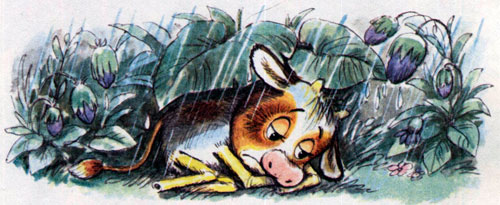
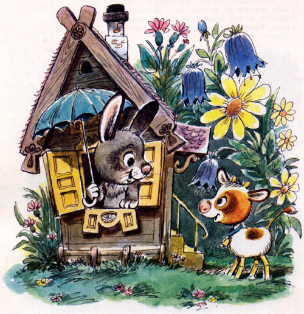
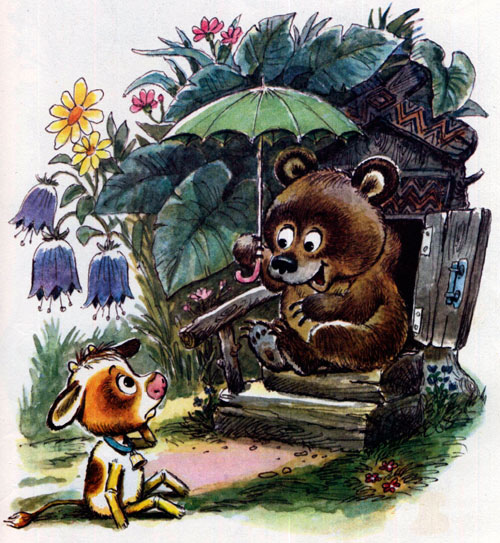
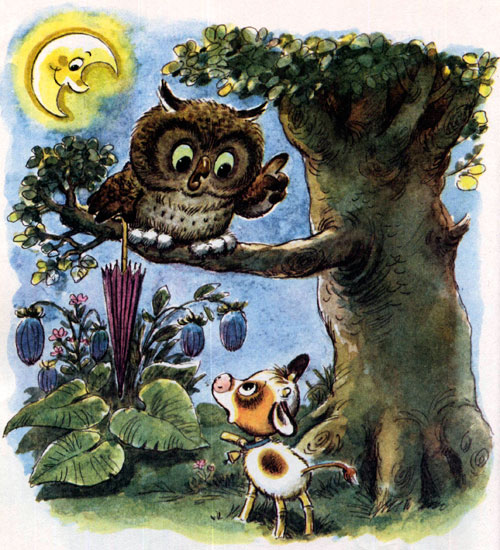
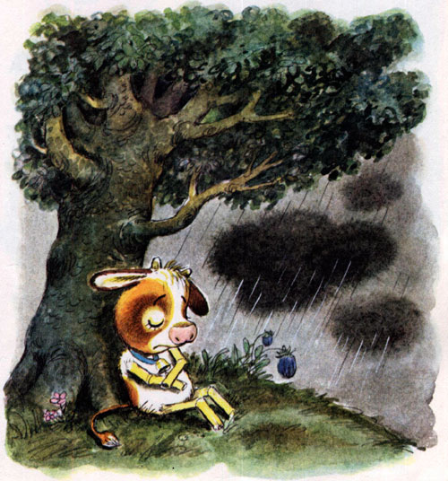
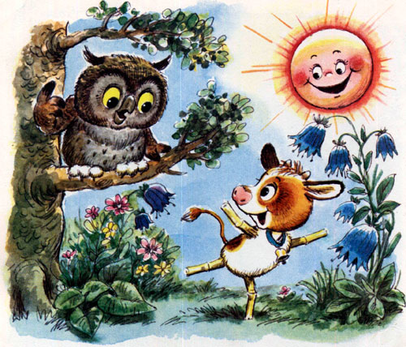

Телёнок
Геннадий Цыферов
Если вы очень хотите с ним познакомиться, то смотрите: вот он какой? Белый комочек с головой, а с двух сторон четыре соломинки воткнуты.
Да только сейчас я хотел рассказать тебе совсем не о том, как он выглядит. Просто в тот день был очень хороший день. Светило солнце, качались цветы на лугу.

А телёнок всё прыгал, всё играл. Так что даже спать не хотелось. А когда лёг, то сказал: «Ладно, ладно, но завтра обязательно допрыгаю».
И мы часто говорим так.

Но завтра была совсем другая погода. Дул холодный ветер, шёл холодный дождь. И все голубые цветы закрылись зелёными платочками. А телёнок погрустил, погрустил и решил: «Если вчера было тепло и красиво, значит, мне просто надо его опять найти».

Вот так он и пошёл искать вчерашний день. Пришёл к зайцу, постучал в его домик. Выглянул заяц, голубой зонтик открыл и не спеша ответил:
— Нет, хоть я и бегаю всюду, но где спрятался вчерашний день, право, малыш, не знаю.
И потопал телёнок к медвежонку.

Вылез из своей берлоги, заросшей лопухами, бурый медвежонок, раскрыл зелёный зонтик и тоже не спеша ответил:
— Нет, мой брат, хоть я и топаю много, но тот вчерашний день, извини, не видел.
Так никто и не смог сказать, где он, красивый вчерашний день. Только разноцветными зонтиками все качали. А потом вечер пришёл. И тогда решил телёнок спросить о том у мудрой совы.

Хлопнула сова оранжевыми крыльями, сверкнула зелёными глазами и ответила тихо:
— Друг мой, ещё никто в мире не знает, куда уходят вчерашние дни.
И совсем опечалился телёнок. Сел под сосну, закрыл глаза и уснул от горя. А чёрные тучи небо закрыли.

Но вот, наконец, проснулся телёнок. И что же? Опять весёлое солнце и голубые цветы на лугу качаются.
И закричал он тогда радостно:
— Смотрите, звери, я всё–таки нашёл это красивое вчера!

— Нет, — сказала ему сверху сова, — друг мой, это не вчера, это сегодня.
— Но как же так, — замычал телёнок, — ведь я искал только вчерашний красивый день?!
— Ну конечно, — кивнула сова, — да только кто ищет красивое вчера, всегда находит только сегодня. Не правда ли, мой друг? Потому и хорошо жить на свете.
Телёнок ответил:«Му–му», что по-нашему значит: «Да–да, конечно».